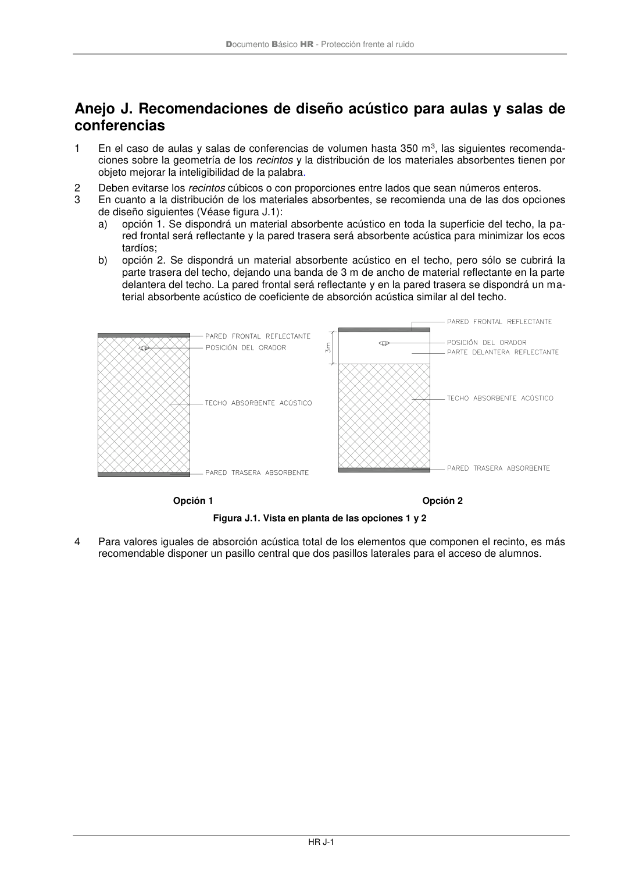

DB-HR Protección frente al ruido · edición 2019-12-20 · capa oficial
Documento DB-HR-oficial · SHA-256 del PDF a67baeca5138bb1f121f797d23a79a4557bd9ac4abacd954024893e05411eeab
Copia fiel del PDF fuente · Fuente oficial
Ficha de la disposición en la fuente oficial
Formatos: JSON del segmento · Markdown
I.2 Fachadas, cubiertas y suelos en contacto con el aire exterior Las fachadas, cubiertas y suelos en contacto con el aire exterior, deben cumplir lo establecido en el apar- tado 3.1.2.5. Documento Básico HR - Protección frente al ruido HR J-1
